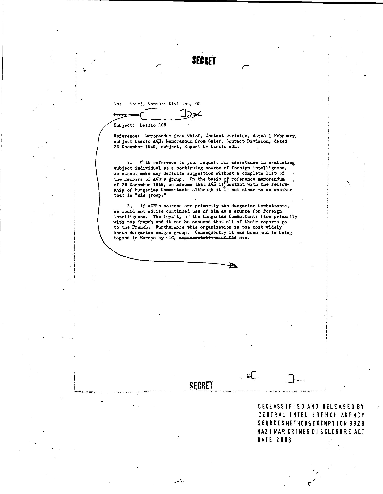

Somewhat surprisingly, the Google Document AI tool suite does not
include a straightforward way to embed OCR output in PDFs. This
functionality exists in many other OCR products – in Tesseract, for
example, it’s as simple as
running(tesseract input.jpg output pdf) – so I suspect
Google just hasn’t prioritized it. Interestingly, the Python client
library “Document AI Toolbox” includes a hOCR
conversion script) but stops short of providing a method for
creating searchable PDFs.
This said, writing code to reliably create searchable PDFs from custom OCR output is not straightforward, especially outside of Python. The main challenge is embedding text in PDFs in the right places, handling font sizes and encoding issues along the way. As far as I am aware, the only open-source tool that can do it well is the Reportlab PDF Toolkit (a Python library). But the Reportlab toolkit itself does not include a direct solution for converting OCR output formats such as HOCR and ALTO to searchable PDFs, so it is left to small community efforts such as hocr-tools to implement it (by adapting Reportlab’s code). Meanwhile, in R, there are no packages that can embed text in PDFs, let alone create searchable PDFs from custom OCR output.
This is why daiR does not provide a native R solution
for embedding OCR-extracted text in PDFs. However, as of version 0.9.9,
daiR includes the function make_hocr, which
creates HOCR files from Document AI output, and this takes us some of
the distance. This article will describe a simple pipeline which
combines dair::make_hocr and the command-line tool hocr-pdf from
the aforementioned hocr-tools project.
Before we begin, you may want to install hocr-tools on
your computer. Instructions are here. Note that the
package version on PyPI currently lags behind the Github codebase, and I
had to clone the repository and build from source to get the
hocr-pdf function to work. This situation will hopefully
change in due course.
Note that hocr-pdf only handles individual .jpg images,
and it works best if the hocr file is generated from an OCR process
involving the same .jpg file. This means you cannot process
a multi-page pdf in Document AI and take the output to hocr-pdf; you
need to convert the pdf to a set of .jpg files first and
then feed them individually to Document AI, so that you get hocr files
that match the .jpg files. Other than this quirk, the
procedure works well.
In this illustration, we will use a single, “ready made”
.jpg. Conversion from PDF to .jpg can be done
quite easily with packages like pdftools or
magick.

Let us start by downloading the image into a temporary subdirectory of our working directory.
dir.create("temp")
download.file("https://dair.info/articles/sample.jpg", "temp/sample.jpg")Then we process the image synchronously with Document AI.
Then we generate the HOCR file:
make_hocr(type = "sync", output = resp, dir = "temp", outfile_name = "sample.hocr")Note that the two files sample.jpg and
sample.hocr carry the same name (sample) and
reside in the same directory (temp). Both conditions are
necessary for hocr-pdf to work.
If hocr-tools is installed, we can now run the
hocr-pdf utility, either in the terminal or from within R
using the system() command.
In the terminal:
In R:
system("hocr-pdf temp > temp/sample.pdf")And you should now have a searchable PDF in the temp
directory.
Note that you can also open the .hocr file in a web
browser and read the extracted text there. Just right-click on it in the
file explorer, click “open with”, and select your browser. This works
for .hocr files generated from documents in all the
languages that DAI covers.
make_hocr handles non-Latin scripts and right-to-left
languages just fine, but unfortunately hocr-pdf cannot as
yet embed non-Latin script in pdfs. This means there is currently no way
of creating searchable pdfs from documents with such scripts OCRed in
Document AI – at least to my knowledge. To generate searchable pdfs from
such documents, you can use Tesseract, but then you get the output from
a different OCR engine.
Languages tested:
make_hocr() and hocr-pdf both
work.make_hocr() works, but hocr-pdf
does not.make_hocr() works, but hocr-pdf
does not.make_hocr() works, but hocr-pdf
does not.make_hocr() works, but hocr-pdf
does not.